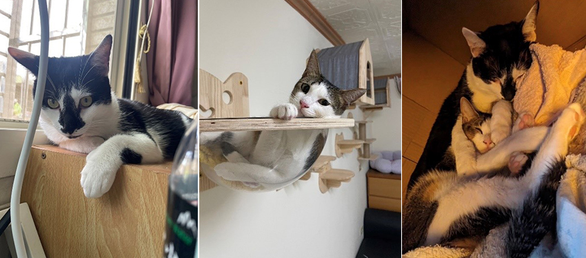

意外入坑雙喵的療癒之旅
曹郁芬│平鎮營運處 \ 專案課
無意間在領養社團看到收養文，與送養人聯繫上後，誤打誤撞成了第一次貓奴，怕不上手原只養一隻，送養人說條件允許，養兩隻有伴，就一次從中途之家，抱兩隻回來了。
Bebe是哥哥，鼻子黑黑像是妙鼻貼。主人回家，牠會在門口等你，頭會靠向你撒嬌。牠也是隻貪吃貓，要吃小魚乾，又或跟牠玩躲貓貓，都會向你喵喵叫。真想跟哆啦A夢借翻譯蒟蒻，聽懂喵喵叫的內容！
Yumi是妹妹，因為小時在野外被欺負、防備心重，剛開始比較怕生，但相處後也很親人。主人回家，牠會翻肚向你撒嬌，更厲害的是，有時關門在房間處理事情，他會自己拉開拉門跑進來，會誤以為家裡遭小偷，哈。
牠們都快一歲了，時常互相舔毛、照顧對方，冬天也喜歡在暖爐前，抱一起睡覺。貓咪雖不像人類能溝通談天，但牠們會靜靜地在旁陪伴，這如此從容又純粹的愛，在忙碌生活中是個不可缺少的療癒因子呢！
|  |